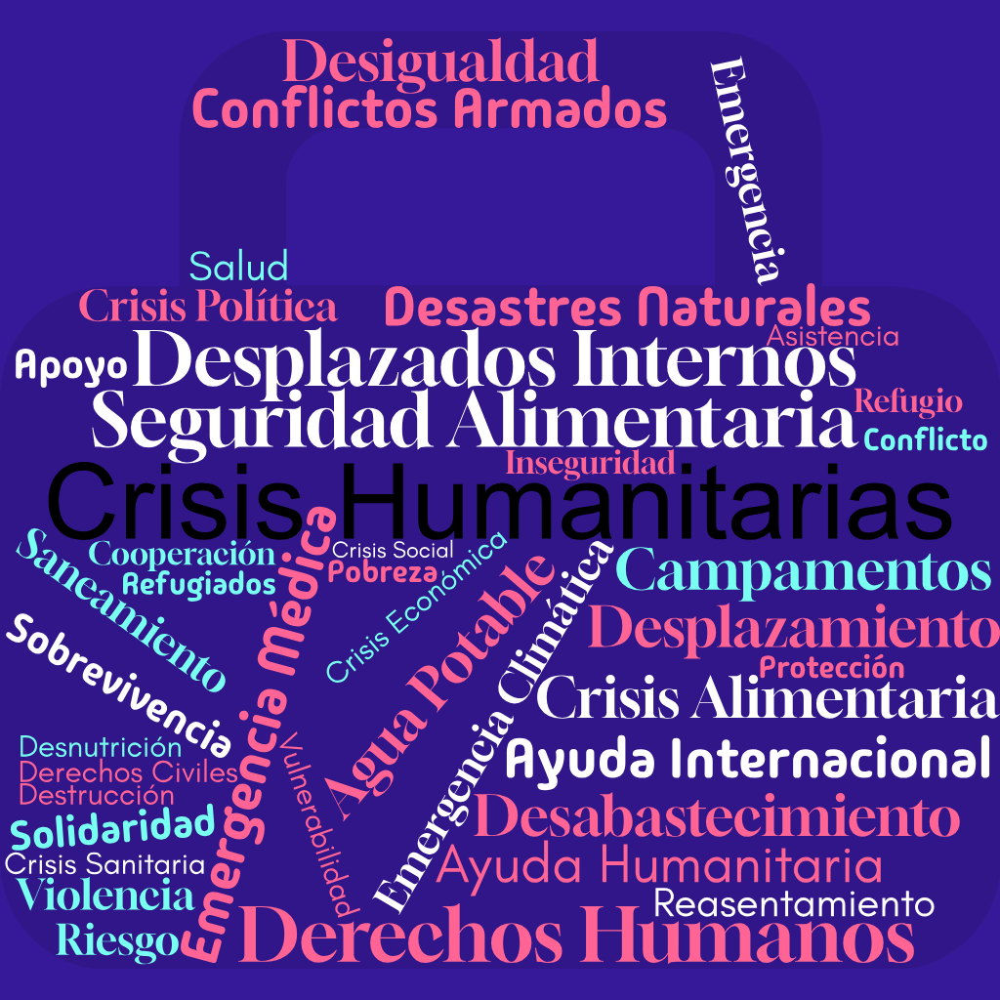

Descripción
Esta nube de ideas presenta términos clave relacionados con las crisis humanitarias. Es una herramienta visual que ayuda a organizar y recordar conceptos fundamentales para comprender la magnitud y los aspectos involucrados en estas situaciones.
IMAGEN RESPRESENTATIVA
